Metabolic modeling and analysis for bioprocess engineering (2) SOLVER 예제편
저번 요약
Flux Balance Analysis (FBA)란?
세포 안에서는 포도당, 아미노산 같은 물질이 들어오고 여러 화학반응을 거쳐 ATP,부산물,원하는 제품이 만들어진다. 근데 이런 반응들은 너무 많고 복잡해서 반응의 속도 flux를 다 알 수 없다. 그래서 쓰는 것이 Flux balance analysis이다. 이는 세포가 steady state라고 가정하고 flux를 최적화해서 계산하는 방법이다.
핵심적인 공식으로는 SV=0이 있다. 근데 이것만으로는 해가 무수히 많아서 풀기 어려울 때가 있다. 그래서 제약조건(glucose uptake 최대 얼마, 반응 방향성 등)을 걸고, 목적함수를 하나 정한다 (예: “에탄올 생산량 최대화”). 그러면 선형계획법(Linear Programming) 문제로 풀 수 있다.
왜 선형계획법이 필요한가?
실험으로 모든 반응속도를 다 측정할 수 없다.
하지만 FBA는 실험으로 측정 가능한 몇 개 flux + 수학적 네트워크 구조만 있으면 전체 flux 분포를 추정할 수 있다.
즉, 실험 + 수학모델을 합쳐서 복잡한 네트워크를 효율적으로 분석하는 방법이 FBA라고 할 수 있다.
Step 1: Definition of systems boundaries
Step 2: Mathematical representation via mass balance (S) (선형계획법시 제약조건(반드시 충족해야됨)과 목적함수(제일 작아져야되거나 커야되는 값) 필요)
Step 3: Apply additional constraints to the system for performing FBA
예제1) 실제로 Flux Balance Analysis (FBA)를 Excel Solver로 직접 해보기
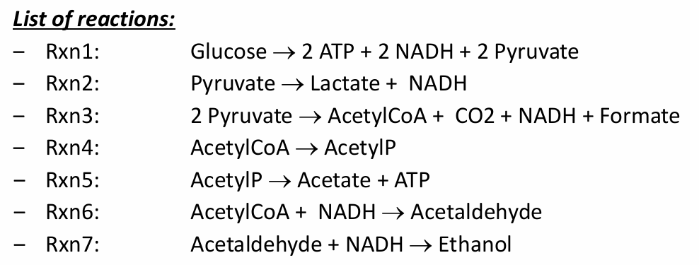
이런 반응들이 있다고 해보자. 여기서 중요한 것은 Pyruvate, AcetylCoA, AcetylP, Acetaldehyde의 4가지이다. 이것들만 관심 목표로 두고 S를 만들어보자.
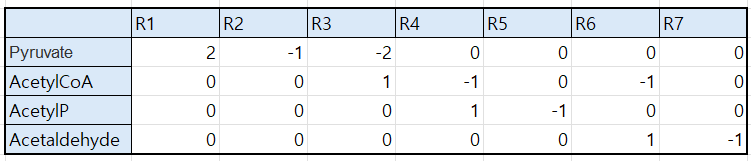
일단 여기까지 하면 계를 정의하고 S를 세운 것이다. 이때 미지수는 v1~7까지 총 7개가 있는데 종이 4개가 있으므로 총 3개의 반응속도가 더 규정되어야 한다.
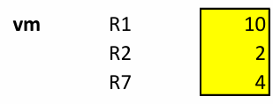
이렇게 3개를 규정하면, 나머지 4개의 변수들도 규정할 수 있다. 이때 R7은 여기서 4로 규정됐지만, 규정이 되지 않았다고 치고 최적해를 구해보겠다. 그러려면 제약조건과 목적함수를 정해야 한다.
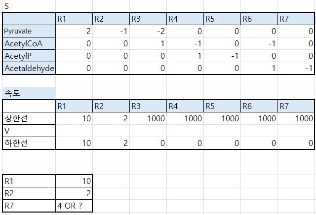
먼저 속도 표를 만들어주는데, 제약조건으로 상한과 하한을 만들어준다. 이때 속도가 규정된 R1 R2는 상한 하한을 규정된 속도로 입력해준다.
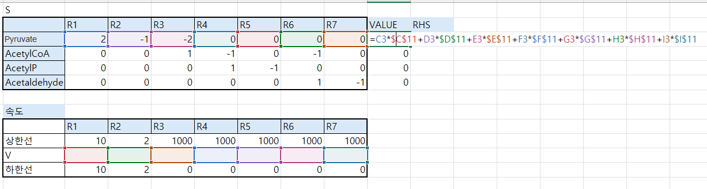
이제 옆에 Value 표를 만들어서 피루베이트는 R1*V1+R2*V2+R3*V3+R4*V4+R5*V5+R6*V6+R7*V7을 해준다. 이러면 전체 생성/소모량이 나오게 된다. 얘는 dC/dt를 의미한다. 이걸 쭉 드래그해서 4개의 성분에 다 해준다.
그리고 RHS(오른쪽 사이드)는 0으로 설정해준다. 이건 SS를 의미한다.
이제 상한 하한을 설정했고, 값 수식도 만들어줬으니 목적함수를 설정해줘야 한다. 이 예제에서 세포의 목표는 Ethanol 생산을 최대화하는 것이다. 이는 반응 7에서 나오기 때문에 R7의 V값이 커질 수록 생산이 많아진다.
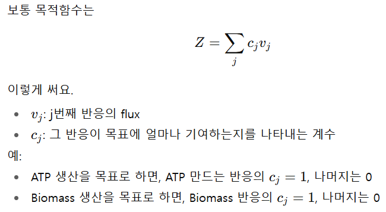 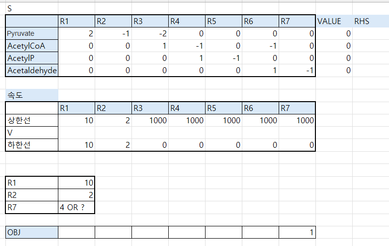
내가 원하는 반응이 7이고 나머진 필요없기에, 0 입력해주고 R7에만 1을 쳐준다.
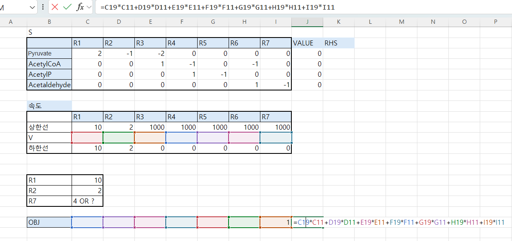
그리고 바로 옆에 목적함수 Z를 두는데, 이건 이해를 하자면 다음과 같다.
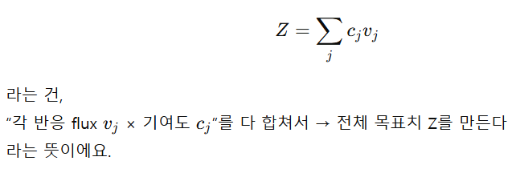
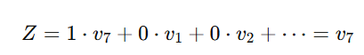
이렇게 정의가 된다.
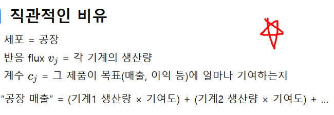
즉 에탄올 생산량 Z가 목적함수인데, 반응7이 1로 가장 크게 기여한다는 뜻이라고 보면 된다.
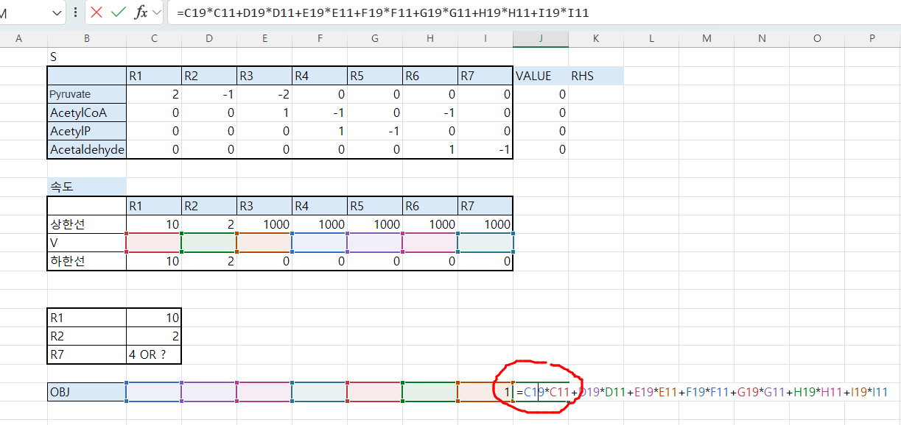
이제 Z값을 해찾기로 구할 것이다.
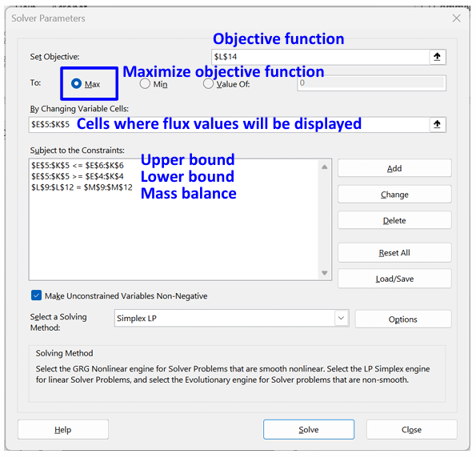 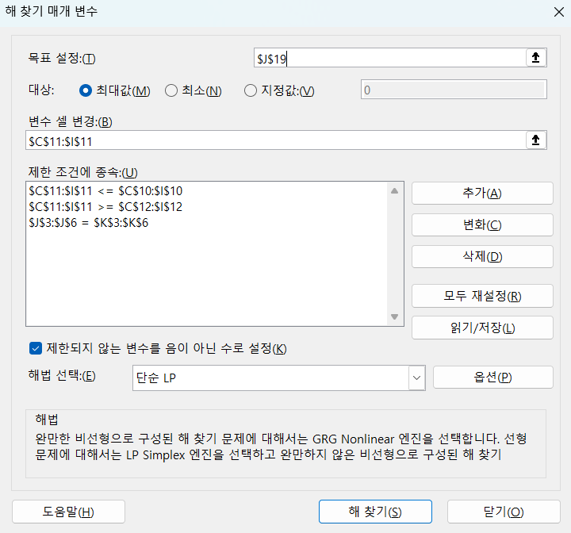
속도를 변수 셀들로 하여 목표 설정된 Z 값을 찾을 것이다. 최대값으로 해줄거고 제한 조건으로는 V 셀들이 상한과 하한 사이여야 한다. 해법은 단순 LP(선형계획법)으로 정해준다.
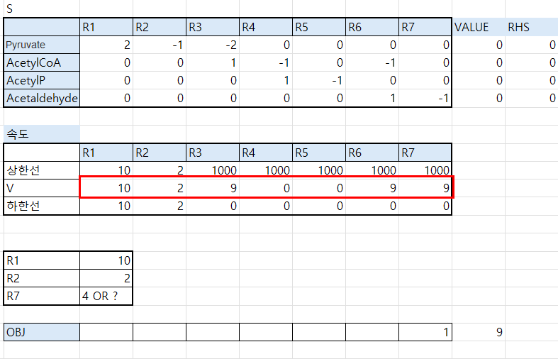
그러면 이렇게 식이 나오게 된다. 이 결과를 해석해보도록 하자.
V1=10이므로 피루베이트 20이 공급된다. 이중 V2=2 이므로 2개의 피루베이트는 없어지고 나머지 피루베이트는 모두 다 리액션 3으로 간다. 이로 인해 18개의 아세틸COA가 생산되고 이것이 모두 R6, R7에서 아세트알데하이드 ->에탄올로 간다.
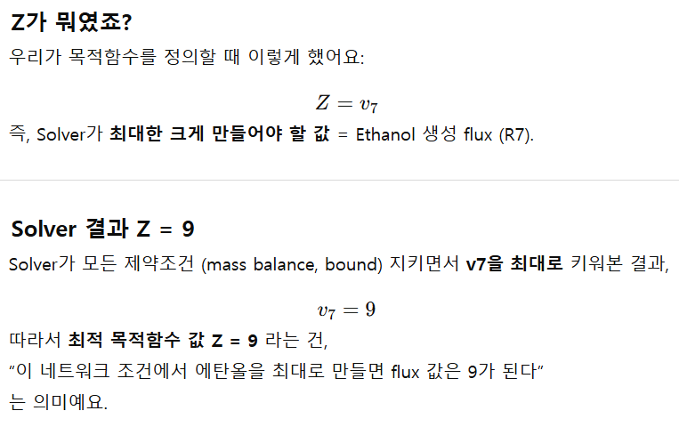
Z=9 가 나온 것은 목표인 에탄올 생산량의 최대가 9라는 것을 의미한다.
이렇게 솔버로 문제를 풀어보았다. 이제 다른 예제를 풀어보도록 하자.
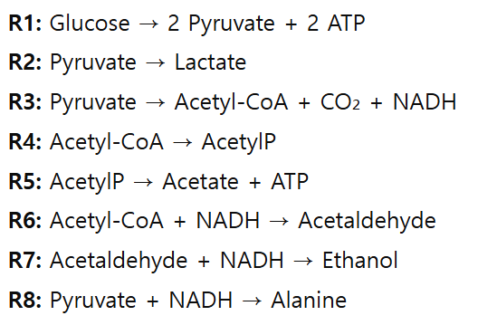
이제 여기서 R1=10 말고 다른 조건은 없다. 또한 R8이 추가되어 피루브산이 알라닌으로도 가게 되는데, 우리의 목표는 에탄올과 알라닌의 생산을 최대화하는 것이다.
Q1) R1=10일 때, R7(에탄올) + R8(알라닌) 생산을 최대로 만들면 각 반응 flux 값은 어떻게 분배되는가?
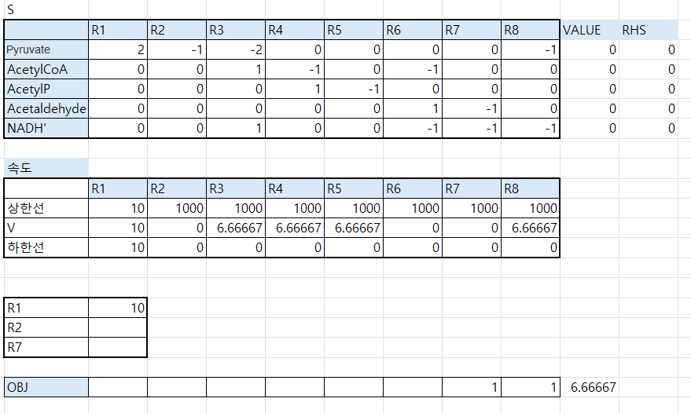
일단 가중치를 R7(에탄올) 과 R8(알라닌)을 둘다 1로 뒀더니, 에탄올은 안생성하고 알라닌만 생성해버렸다. 이는 둘다 NADH가 반응물이기 때문인데, 이를 둘 다 분배하지 않고 알라닌에게만 몰아준 것이다. ( 그 이유는 알라닌이 NADH 효율이 더 좋기 때문이다.) 만약 둘 다 생성하고 싶다면 다음과 같이 에탄올에게 가중치를 몰아주면 된다.
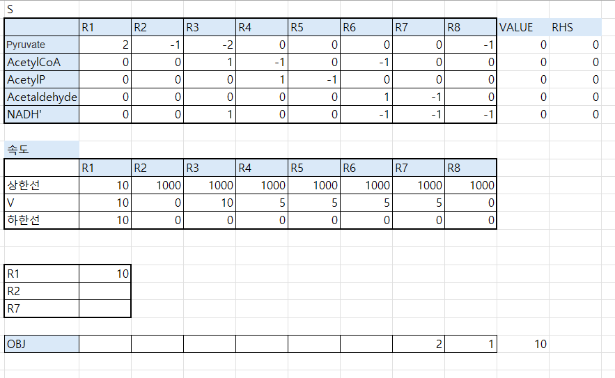
이 경우엔 에탄올이 알라닌보다 중요하기에, 별로 없는 NADH를 에탄올에 몰아주게 다.
Q2) 만약 Lactate 경로(R2)에 하한선 v2 ≥ 5를 추가로 주면, 결과가 어떻게 바뀌는가
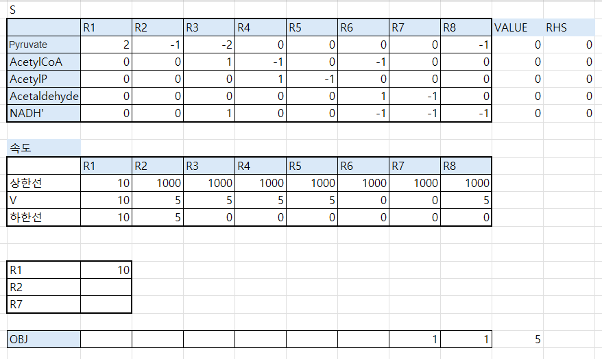
알라닌 생산 집중시 알라닌 5을 생성할 수 있다.
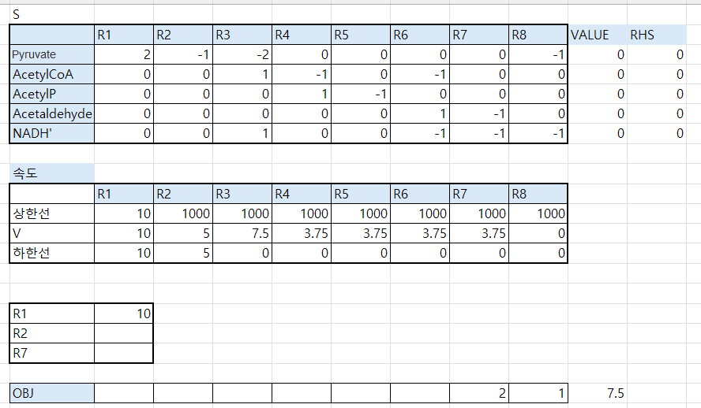
에탄올 생산 집중시 에탄올을 3.5개 생산할 수 있다. 이렇게 줄어든 이유는 R2에 피루베이트가 낭비되기 때문이다
참고) 실제로 Solver로 FBA를 하면, 가중치를 다르게 주면 한쪽을 아예 버리고 다른 쪽만 생산하는 결과가 나오는 경우가 많다. 이는 최적화(Optimization)의 본질로 Solver는 목적함수를 최대화하는 해만 찾는다.
만약 Ethanol에 2배 가중치를 주면, Solver는 Alanine을 조금이라도 만들기보다는 Ethanol을 최대로 돌리는 게 이득이다.
반대로 Alanine에 가중치를 더 주면 Ethanol은 버려진다.
즉, Solver는 “둘 다 적당히”가 아니라 가장 유리한 한쪽을 몰빵하는 경향이 있다.